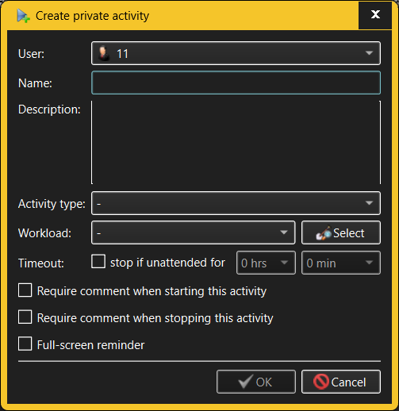

Create/Modify Private Activity dialog
The same dialog is used for both creating new Private Activities and modifying existing
Private Activities.

The fields in the Create/Modify Public Activity dialog allow the user to specify:
- User - a Private Activity always belongs to some User.
The owner of a Private Activity can be chosen when creating a Private
Activity, but TimeTracker3 does not currently allow re-assigning an existing
Private Activity to another User.
- Name - Private Activities are identified by short,
descriptive names (such as "Code cleanup", "Visit to the gym" and so on) which must
be unique within the owning User.
- Description - if the Private Activity name is not
self-explanatory, its description may help to clarify its meaning. Multiple
lines of text may be entered here.
- Activity type - use this drop-down list to select the
Activity Type to assign the Private Activity to.
- Workload - use this drop-down list and its associated
selection button to assign a Private Activity to a specific Project or Work
Stream. Such assignments help in tracking effort dedicated to individual
Projects over a period of time.
- Timeout - these fields govern what happens if the user
starts recording the Private Activity but then
leaves the computer unattended. If this is to happen, TimeTracker3 may
automatically finish the Private Activity in question, logging a comment to that
effect. NOTE that this behavior overrides any "inactivity timeout"
configured for the User as far as the Private Activity in question is
concerned.
- Require comment when starting/stopping this activity -
these two check boxes specify what happens when the Private Activity is
started and stopped. If any of the two are checked, then TimeTracker3 will
present a popup dialog requesting the user to enter a comment, which is then
recorded into the workspace as an Event. If the Activity that is being
recorded requires comment when stopped, and the switch is made to recording
an Activity which requires a comment when started, the user is asked to
enter the comment only once; such comment is then associated with both old
and new recorded Activity.
- Full-screen reminder - if checked, then starting such a
Private Activity will pop up a full-screen reminder window stating that the
Private Activity is underway (and how long it is being recorded for); this
popup window will be hidden when the recording of the Private Activity is
stopped. This is beneficial for Private Activities which expect the user to
leave their workplace (such as lunch breaks, meetings, etc.) - having a
full-screen reminder helps thenuser to explicitly stop recording the Private
Activity, logging an "away from keyboard" Work item and switching to the
next Activity to work on.
Only someone with Administrator or Manage Private Activities capabilities is
allowed to create or modify Private Activities. However, anyone who can log into a
given workspace can see all of their own Private Activities. The exception to
this rule is the case when a specific User is configured to only allow working
on specific Private Activities, in which case only these Private Activities will
be visible in the list and all other existing Private Activities will not be
visible. NOTE also that an Administrator will be able to see and manage Private
Activities of any User.
See also: -